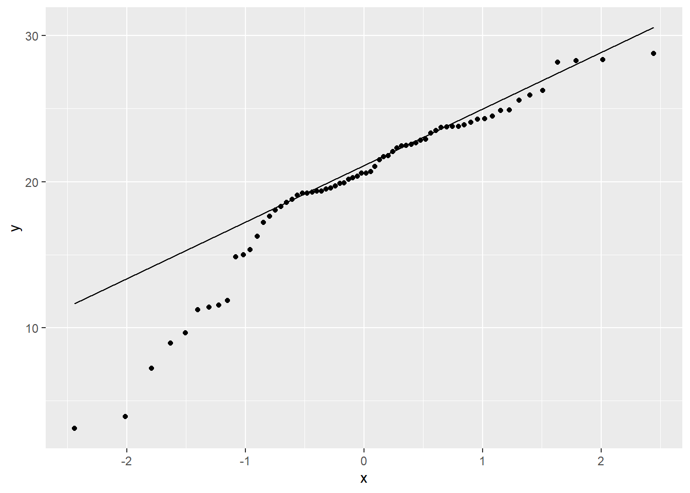
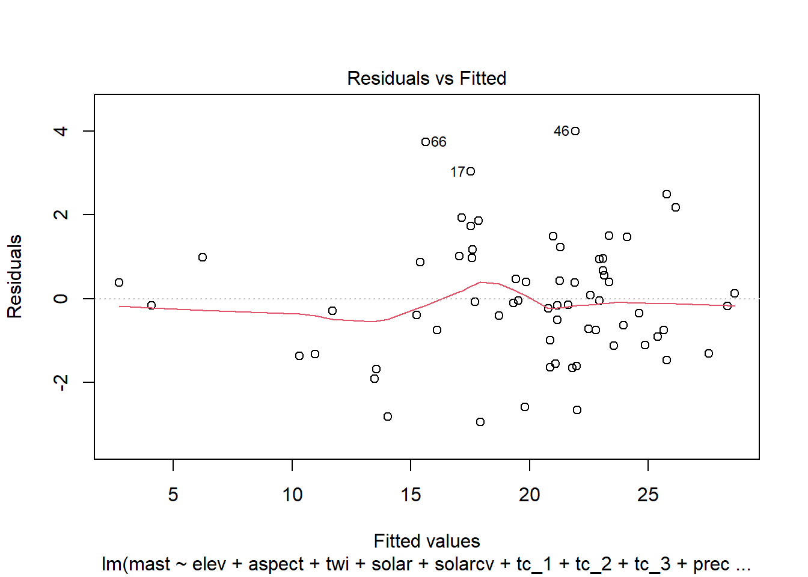

Chapter 4 Linear Regression
Statistics for pedologists course banner image
4.1 Introduction
Linear regression models the linear relationship between a response variable (y) and an predictor variable (x).
\(y = \alpha + \beta x + e\)
Where:
\(y\) = the dependent variable
\(\alpha\) = the intercept of the fitted line
\(\beta\) = the Regression coefficient, i.e. slope of the fitted line. Strong relationships will have high values.
\(x\) = the independent variable (aka explanatory or predictor variable(s) )
\(e\) = the error term
Linear regression has been used for soil survey applications since the early 1900s when Briggs and McLane (1907) developed a pedotransfer function to estimate the wilting coefficient as a function of soil particle size.
Wilting coefficient = 0.01(sand) + 0.12(silt) + 0.57(clay)
When more than one independent variable is used in the regression, it is referred to as multiple linear regression. In regression models, the response (or dependent) variable must always be continuous. The predictor (or independent) variable(s) can be continuous or categorical. In order to use linear regression or any linear model, the errors (i.e. residuals) must be normally distributed. Most environmental data are skewed and require transformations to the response variable (such as square root or log) for use in linear models. Normality can be assessed using a QQ plot or histogram of the residuals.
4.2 Linear Regression Example
Now that we’ve got some of the basic theory out of the way we’ll move on to a real example, and address any additional theory where it relates to specific steps in the modeling process. The example selected for this chapter comes from the Mojave desert. The landscape is composed primarily of closed basins ringed by granitic hills and mountains (Peterson, 1981). The problem tackled here is modeling mean annual air temperature as a function of PRISM, digital elevation model (DEM) and Landsat derivatives.
This climate study began in 1998 as part of a national study run by the National Lab and led by Henry Mount (Mount and Paetzold, 2002). The objective was to determine if the hyperthermic line was consistent across the southern US, which at the time was thought to be ~3000 in elevation. Up until 2015 their were 77 active MAST sites, and 12 SCAN sites throughout MLRA 30 and 31.
For more details see the “MLRA 30 - Soil Climate Study - Soil Temperature” project in NASIS, on GitHub, or by Roecker et al., 2012.
## Loading required namespace: rvest## # A tibble: 1 x 30
## mlrassoarea nonmlrassaarea mlraarea projecttypename fiscalyear
## <chr> <chr> <int> <chr> <int>
## 1 8-VIC <NA> 30 MLRA 2015
## # ... with 25 more variables: fiscalyear_goaled <int>, projectiid <int>,
## # uprojectid <chr>, projectname <chr>, projectapprovedflag <lgl>,
## # projectconcerntypename <chr>, projectdesc <chr>, n_projectdesc <int>,
## # n_areasymbol <int>, n_nationalmusym <int>, n_spatial <int>,
## # date_start <date>, date_complete <date>, date_qc <date>,
## # date_qa_start <date>, date_qa_complete <date>, date_qc_spatial <date>,
## # date_qa_spatial <date>, pl_username <chr>, qa_username <chr>,
## # muacres <int>, acre_landcat <int>, acre_goal <int>, acre_progress <int>,
## # pct_progress <int>In addition to the 11-IND MAST modeling efforts there has also been two published studies on the Mojave. The first was by Schmidlin et al. (1983) who examined both the Great Basin and Mojave Deserts in Nevada. The second was by Bai et al. (2010) who examined the Mojave Desert in California. Both studies developed regression models using elevation, but Schmidlin et al. (1983) also incorporated latitude. The results from Bai et al. (2010) displayed considerably larger areas of hyperthermic soils than Schmidlin et al. (1983). This made be due to the unconventional method used by Bai et al. (2010) to measure MAST.
4.3 Data
4.3.1 Henry Mount Database
The Henry Mount Database already has 79 of the sites from the Mojave. However only 8 have temperature records.
## computing un-biased soil temperature summaries## 79 sensors loaded (1.97 Mb transferred)4.3.2 Aggregate Time Series
ms_df <- f$soiltemp
s <- f$sensors
# convert date time data
ms_df <- mutate(
ms_df,
day = date_time,
Jday = doy
)
# Plot sites visually inspect for flat lines and spikes
ms_df %>%
filter(name == "JVOHV2-50") %>%
ggplot(aes(x = day, y = sensor_value)) +
geom_line()## Warning: Removed 649 row(s) containing missing values (geom_path).
# Aggregate by Year, Month, and Julian day (i.e. 1-365, 366 for leap years)
# compute number of days per site
ms_n_df <- ms_df %>%
group_by(sid, day) %>%
summarise(mast = mean(sensor_value, na.exclude = TRUE)) %>%
group_by(sid) %>%
summarise(numDays = sum(!is.na(mast)), ) %>%
ungroup()## `summarise()` has grouped output by 'sid'. You can override using the `.groups` argument.# compute mast per year
ms_site_df <- ms_df %>%
group_by(sid, Jday) %>%
summarise(mast = mean(sensor_value, na.rm = TRUE)) %>%
group_by(sid) %>%
summarise(mast = mean(mast, na.rm = TRUE)) %>%
ungroup()## `summarise()` has grouped output by 'sid'. You can override using the `.groups` argument.4.4 Spatial data
4.4.1 Plot Coordinates
Where do our points plot? To start we need to convert them to a spatial object first. Then we can create an interactive we map using mapview. Also, if we wish we can also export the locations as a Shapefile.
## Warning: package 'sf' was built under R version 4.0.5## Linking to GEOS 3.9.0, GDAL 3.2.1, PROJ 7.2.14.4.2 Extracting Spatial Data
Prior to any spatial analysis or modeling, you will need to develop a suite of geodata files that can be intersected with your field data locations. This is, in and of itself a difficult task and should be facilitated by your Regional GIS Specialist. The geodata files typically used would consist of derivatives from a DEM or satellite imagery, and a ‘good’ geology map. Prior to any prediction it is also necessary to ensure the geodata files have the same projection, extent, and cell size. Once we have the necessary files we can construct a list in R of the file names and paths, read the geodata into R, and then extract the geodata values where they intersect with field data.
As you can see below their are numerous variables we could inspect.
library(raster)
# set file path
folder <- "D:/geodata/project_data/R8-VIC/"
files <- c(elev = "ned30m_8VIC_elev5.tif",
slope = "ned30m_8VIC_slope5.tif",
aspect = "ned30m_8VIC_aspect5.tif",
twi = "ned30m_8VIC_wetness.tif",
solar = "ned30m_8VIC_solar.tif",
solarcv = "ned30m_8VIC_solarcv.tif",
tc = "landsat30m_8VIC_tc123.tif",
precip = "prism30m_8VIC_ppt_1981_2010_annual_mm.tif",
temp = "prism30m_8VIC_tmean_1981_2010_annual_C.tif"
)
# combine the folder directory and file names
geodata_f <- paste0(folder, files)
names(geodata_f) <- names(files)
# Create a raster stack
geodata_r <- stack(geodata_f)
# Extract the geodata and add to a data frame
data <- raster::extract(geodata_r, as(mast_sf, "Spatial"), sp = TRUE)@data
# convert aspect
data$northness <- abs(180 - data$aspect)
# random sample
vars <- c("elev", "temp", "precip", "solar", "tc_1", "twi")
idx <- which(names(geodata_r) %in% vars)
geodata_s <- sampleRegular(geodata_r[[idx]], size = 5000)
# cache files
save(data, mast_df, mast_sf, mlra, geodata_s, file = "C:/workspace2/github/ncss-tech/stats_for_soil_survey/data/mast_mojave.Rdata")4.5 Exploratory Data Analysis (EDA)
Generally before we begin modeling it is good to explore the data. By examining a simple summary we can quickly see the breakdown of our data. It is important to look out for missing or improbable values. Probably the easiest way to identify pecularities in the data is to plot it.
githubURL <- "https://raw.githubusercontent.com/ncss-tech/stats_for_soil_survey/master/data/mast_mojave.Rdata"
load(url(githubURL))
summary(data)## siteid mast numDays elev
## Cheme01 : 1 Min. : 3.10 Min. : 363 Min. : -80.02
## Clark01 : 1 1st Qu.:18.50 1st Qu.:1831 1st Qu.: 703.60
## DEVA01 : 1 Median :20.57 Median :2918 Median : 946.79
## DEVA02 : 1 Mean :19.93 Mean :2465 Mean :1083.04
## DEVA03 : 1 3rd Qu.:23.72 3rd Qu.:3397 3rd Qu.:1489.26
## Jawbone01: 1 Max. :28.77 Max. :4159 Max. :3038.61
## (Other) :62
## slope aspect twi solar
## Min. : 0.435 Min. : 7.433 Min. : 8.519 Min. :1370
## 1st Qu.: 3.221 1st Qu.: 39.861 1st Qu.: 9.502 1st Qu.:2031
## Median : 5.667 Median :113.600 Median :12.947 Median :2101
## Mean :14.184 Mean :129.911 Mean :13.019 Mean :2079
## 3rd Qu.:24.142 3rd Qu.:187.696 3rd Qu.:15.744 3rd Qu.:2163
## Max. :54.319 Max. :342.366 Max. :21.226 Max. :2654
## NA's :2
## solarcv tc_1 tc_2 tc_3
## Min. :18.36 Min. : 50.31 Min. : 25.03 Min. : 2.067
## 1st Qu.:31.00 1st Qu.: 93.36 1st Qu.: 48.61 1st Qu.: 32.682
## Median :33.00 Median :125.56 Median : 57.87 Median : 50.433
## Mean :33.82 Mean :122.49 Mean : 58.36 Mean : 53.769
## 3rd Qu.:34.21 3rd Qu.:152.32 3rd Qu.: 66.18 3rd Qu.: 75.994
## Max. :58.81 Max. :197.26 Max. :108.98 Max. :124.071
##
## precip temp northness
## Min. : 3.164 Min. :10.39 Min. : 2.547
## 1st Qu.: 6.581 1st Qu.:21.12 1st Qu.: 31.923
## Median : 7.469 Median :24.05 Median : 91.407
## Mean :10.367 Mean :23.61 Mean : 90.070
## 3rd Qu.:10.422 3rd Qu.:26.61 3rd Qu.:146.644
## Max. :45.046 Max. :31.83 Max. :172.567
## You may recall from discussion of EDA that QQ plots are a visual way to inspect the normality of a variable. If the variable is normally distributed, the points (e.g. soil observations) should line up along the straight line.

By examining the correlations between some of the predictors we can also determine wheter they are collinear (e.g. > 0.6). This is common for similar variables such as landsat bands, terrain derivatives, and climatic variables. Variables that are colinear are redundant and contain no additional information. In additino, collinearity will make it difficult to estimate our regression coefficients.
## Registered S3 method overwritten by 'GGally':
## method from
## +.gg ggplot2

The correlation matrices and scatter plots above show that that MAST has moderate correlations with some of the variables, particularly the elevation and the climatic variables.
Examining the density plots on the diagonal axis of the scatterplots we can also see that some variables are skewed.
4.5.1 Compare Samples vs Population
Since our data was not randomly sampled, we had better check the distribution of our samples vs the population. We can accomplish this by overlaying the sample distribution of predictor variables vs a large random sample.
geodata_df <- as.data.frame(geodata_s)
geodata_df <- rbind(
data.frame(source = "sample", data[names(geodata_df)]),
data.frame(source = "population", geodata_df)
)
geodata_l <- pivot_longer(
geodata_df,
cols = - source
)
ggplot(geodata_l, aes(x = value, fill = source)) +
geom_density(alpha = 0.5) +
facet_wrap(~ name, scales = "free") +
ggtitle("Evaluation of Sample Representativeness")## Warning: Removed 6466 rows containing non-finite values (stat_density).
The overlap between our sample and the population appear satisfactory.
4.6 Linear modeling
R has several functions for fitting linear models. The most common is arguably the lm() function from the stats R package, which is loaded by default. The lm() function is also extended thru the use of several additional packages such as the car and caret R packages. Another noteworthy R package for linear modeling is rms, which offers the ols() function for linear modeling. The rms R package (Harrell et al., 2015) offers an ‘almost’ comprehesive alternative to `lm()’ and it’s accessory function. It is difficult to objectively functions say which approach is better. Therefore methods both methods will be demonstrated. Look for comments (i.e. #) below referring to rms, stats, caret or visreg.
# stats
fit_lm <- lm(mast ~ elev + aspect + twi + solar + solarcv + tc_1 + tc_2 + tc_3 + precip + temp, data = data, weights = data$numDays)
# rms R package
library(rms)
dd <- datadist(data)
options(datadist = "dd")
fit_ols <- ols(mast ~ elev + aspect + twi + solar + solarcv + tc_1 + tc_2 + tc_3 + precip + temp, data = data, x = TRUE, y = TRUE, weights = data$numDays)4.6.1 Diagnostics
4.6.1.1 Residual plots
Once we have a model we need to assess residuals for linearity, normality, and homoscedastivity (or constant variance). Oddly this is one area were the rms R package does not offer convient functions for plotting residuals, therefore we’ll simply access the results of lm().


4.6.1.2 Multicolinearity
As we mentioned earlier multicolinearity should be avoided. To assess a model for multicolinearity we can compute the variance inflation factor (VIF). Its square root indicates the amount of increase in the predictor coefficients standard error. A value greater than 3 indicates a doubling the standard error. Rules of thumb vary, but a square root of vif greater than 2 or 3 indicates an unacceptable value.
## elev aspect twi solar solarcv tc_1 tc_2 tc_3
## 9.282520 1.179764 1.879222 6.744169 6.695338 4.081507 2.891362 3.619210
## precip temp
## 2.041644 8.270426## elev aspect twi solar solarcv tc_1 tc_2 tc_3 precip temp
## TRUE FALSE FALSE TRUE TRUE TRUE FALSE TRUE FALSE TRUEThe values above indicate we have several colinear variables in the model, which you might have noticed already from the scatter plot matrix.
4.6.2 Variable selection & model validation
Modeling is an iterative process that cycles between fitting and evaluating alternative models. Compared to tree and forest models, linear and generalized models typically require more scrutiny from the user. Automated model selection procedures are available, but should not be taken at face value because they may result in complex and unstable models. This is in part due to correlation monist the predictive variables that can confuse the model. Also, the order in which the variables are included or excluded from the model effects the significance of the other variables, and thus several weak predictors might mask the effect of one strong predictor. Regardless of the approach used, variable selection is probably the most controversial aspect of linear modeling.
Both the rms and caret packages offer methods for variable selection and cross-validation. In this instance the rms approach is a bit more convenient, with the one line call to validate().
# Set seed for reproducibility
set.seed(42)
# rms
## stepwise selection and validation
fit_step <- validate(fit_ols, method = "crossvalidation", B = 10, bw = TRUE)##
## Backwards Step-down - Original Model
##
## Deleted Chi-Sq d.f. P Residual d.f. P AIC R2
## solar 0.00 1 0.9627 0.00 1 0.9627 -2.00 34736
## aspect 0.15 1 0.6944 0.16 2 0.9247 -3.84 34736
## tc_3 0.70 1 0.4032 0.86 3 0.8362 -5.14 34735
## precip 0.34 1 0.5609 1.19 4 0.8792 -6.81 34735
## twi 0.84 1 0.3586 2.04 5 0.8441 -7.96 34733
## temp 3.25 1 0.0716 5.28 6 0.5082 -6.72 34728
##
## Approximate Estimates after Deleting Factors
##
## Coef S.E. Wald Z P
## Intercept 43.887389 2.1856221 20.080 0.000e+00
## elev -0.006998 0.0003973 -17.613 0.000e+00
## solarcv -0.190672 0.0211880 -8.999 0.000e+00
## tc_1 -0.036248 0.0078482 -4.619 3.863e-06
## tc_2 -0.093525 0.0245610 -3.808 1.402e-04
##
## Factors in Final Model
##
## [1] elev solarcv tc_1 tc_2The results for validate() above and below show which variables were retained and deleted. Below we can see a dot matrix of which variables were retained in during the 10 iterations of the cross validation. In addition, below we can see the difference between the training and test accuracy and error metrics. Remember that it is the test accuracy we should pay attention too.
## index.orig training test optimism index.corrected n
## R-square 0.9480 0.9480 0.6819 0.2661 0.6819 10
## MSE 1.5629 1.5504 2.7899 -1.2395 2.8024 10
## g 5.7490 5.7647 5.4549 0.3098 5.4392 10
## Intercept 0.0000 0.0000 3.1803 -3.1803 3.1803 10
## Slope 1.0000 1.0000 0.8586 0.1414 0.8586 10
##
## Factors Retained in Backwards Elimination
##
## elev aspect twi solar solarcv tc_1 tc_2 tc_3 precip temp
## * * * *
## * * * *
## * * * *
## * * * *
## * * * *
## * * * *
## * *
## * * * *
## * * * *
## * * * *
##
## Frequencies of Numbers of Factors Retained
##
## 2 4
## 1 94.6.3 Final model & accuracy assessment
# rms
final_ols <- ols(mast ~ elev + solarcv + tc_1 + tc_2, data = data, weights = data$numDays, x = TRUE, y = TRUE)
validate(final_ols, method = "crossvalidation", B = 10)## index.orig training test optimism index.corrected n
## R-square 0.9397 0.9409 0.5574 0.3835 0.5562 10
## MSE 1.7778 1.7245 2.2163 -0.4919 2.2697 10
## g 5.7652 5.6958 4.7817 0.9141 4.8512 10
## Intercept 0.0000 0.0000 2.3202 -2.3202 2.3202 10
## Slope 1.0000 1.0000 0.8845 0.1155 0.8845 104.6.4 Model Effects
## Effects Response : mast
##
## Factor Low High Diff. Effect S.E. Lower 0.95 Upper 0.95
## elev 703.600 1489.300 785.6700 -5.50250 0.310870 -6.12370 -4.88130
## solarcv 31.000 34.206 3.2061 -0.61532 0.067675 -0.75055 -0.48008
## tc_1 93.361 152.320 58.9640 -2.15900 0.459870 -3.07800 -1.24000
## tc_2 48.614 66.183 17.5690 -1.61410 0.429070 -2.47150 -0.75670## Analysis of Variance Response: mast
##
## Factor d.f. Partial SS MS F P
## elev 1 1014554.05 1014554.054 313.30 <.0001
## solarcv 1 267708.50 267708.498 82.67 <.0001
## tc_1 1 71373.80 71373.796 22.04 <.0001
## tc_2 1 45829.32 45829.318 14.15 4e-04
## REGRESSION 4 4375387.71 1093846.928 337.78 <.0001
## ERROR 63 204013.46 3238.309# Plot Effects
ggplot(Predict(final_ols),
addlayer = geom_hline(yintercept = c(8, 15, 22), linetype = "dotted") +
scale_y_continuous(breaks = c(8, 15, 22))
)
# Vary solarcv (North = 23; Flat = 33; South = 55)
ggplot(Predict(final_ols, elev = NA, solarcv = c(23, 33, 51))) +
geom_hline(yintercept = c(8, 15, 22), linetype = "dotted") +
scale_y_continuous(breaks = c(8, 15, 22))
4.7 Generate spatial predictions
# Predict mast model
predfun <- function(model, data) {
v <- predict(model, data, se.fit=TRUE)
}
mast_r <- predict(geodata_r, final_lm, fun = predfun, index = 1:2, progress = 'text')
writeRaster(mast_r[[1]], filename = "C:/workspace2/mast.tif", format = "GTiff", progress = "text")
writeRaster(mast_r[[2]], filename = "C:/workspace2/mast_se.tif", format = "GTiff", progress = "text")4.8 Create Map
library(raster)
mlra <- st_transform(mlra, 5070)
# mast
mast <- raster("C:/workspace2/mast.tif")
crs(mast) <- "+init=epsg:5070"
plot(mast)
plot(mlra[1], col = NA, add = TRUE)
# mast standard error
mast_se <- raster("C:/workspace2/mast_se.tif")
crs(mast_se) <- "+init=epsg:5070"
plot(mast_se)
plot(mlra[1], col = NA, add = TRUE)4.9 Literature
Bai, Y., T.A. Scott, W. Chen, R.C. Graham, L. Wu, A.C. Chang, and L.J. Lund, 2010. Soil Temperature Regimes in the Mojave Desert. Soil Science, 175(8):398-404.
Harrell, F.E., 2015. Regression Modeling Strategies: With Applications to Linear Models, Logisitc and Ordinal Regression, and Survival Analysis. Springer, New York. https://link.springer.com/book/10.1007%2F978-3-319-19425-7
Mount, H.R., and R.F. Paetzold, 2002. The temperature regime for selected soils in the United States. United States Department of Agriculture, Natural Resources Con-servation Service, National Soil Survey Center, Lincoln, Nebraska, Soil Survey Investi-gation Report No. 48.
Peterson, F.F., 1992. Status of Soil Climate Studies in Nevada. pp1-11.
Schmidlin, T.W., F.F. Peterson, and R.O. Gifford, 1983. Soil Temperature Regimes of Nevada. Soil So. Sci. Am. J., 47:977-982.
4.10 Additional reading
Faraway, J.J., 2002. Practical Regression and Anova using R. CRC Press, New York. https://cran.r-project.org/doc/contrib/Faraway-PRA.pdf
James, G., D. Witten, T. Hastie, and R. Tibshirani, 2014. An Introduction to Statistical Learning: with Applications in R. Springer, New York. http://www-bcf.usc.edu/~gareth/ISL/
Webster, R. 1997. Regression and functional relations. European Journal of Soil Science, 48, 557-566. http://onlinelibrary.wiley.com/doi/10.1111/j.1365-2389.1997.tb00222.x/abstract